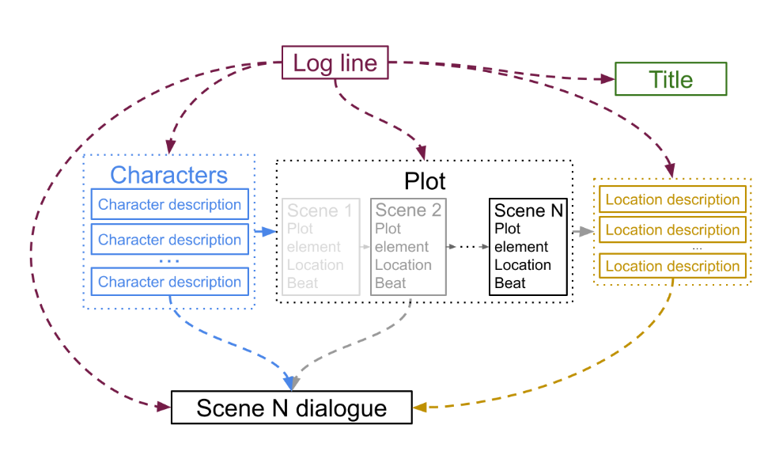

The Fourth Workshop on Intelligent and Interactive Writing Assistants
The 2025 Annual Conference of the Nations of the Americas Chapter of the Association for Computational Linguistics (NAACL 2025)
Albuquerque, NM (in-person only)
The purpose of this interdisciplinary workshop is to facilitate discussion around writing assistants, thereby enhancing our understanding of their usage in writing process and predicting the consequences. To this end, we strive to bring together researchers from the human-computer interaction (HCI) and natural language processing (NLP) communities by alternating our workshop venue between HCI and NLP every year.
⬇️ Examples of new forms of human-machine collaborative writing. ⬇️

Integrative Leaps
(Singh et al., ToCHI 2022)

Wordcraft
(Yuan et al., IUI 2022)

Beyond Text Generation
(Dang et al., UIST 2022)

Dramaton
(Mirowski et al., arxiv 2022)
Important Dates
-
Paper submission deadline: 28 February, 2025 11:59PM AoE (no extensions!) -
Paper acceptance notification: 12 March, 2025 - Workshop date: May 4, 2025
Sponsors
Schedule
| 09:00 - 09:05am | Welcome |
| 09:05 - 10:00am | Keynote: N. Katherine Hayles |
| 10:00 - 10:20am | Best Paper Award Talk (From Crafting Text to Crafting Thought) |
| 10:20 - 10:40am | Diversity Award Talk (ARWI: Arabic Write and Improve) |
| 10:30 - 11:00am | NAACL Coffee Break |
| 11:00 - 12:00pm | Poster Session |
| 12:00 - 12:20pm | Invited Speaker: Max Kreminsky |
| 12:20 - 2:00pm | Lunch Break |
| 02:00 - 2:20pm | Invited Speaker: Carly Schnitzler |
| 02:20 - 2:40pm | Invited Speaker: Wei Xu |
| 02:40 - 3:40pm | Panel with all invited speakers |
| 03:40 - 3:50pm | Closing |
| 03:30 - 4:00pm | NAACL Coffee Break |
| 04:00 - 5:00pm | Social Hour |
Speakers
Keynote Speaker: Dr. N Katherine Hayles
Communicating with Aliens: Large Language Model as Writer/Critic/Reader
- The arrival of Large Language Models (LLMs) has presented literary studies with unparalleled opportunities and challenges. LLMs communicate using human languages, an event never before accomplished; nevertheless, the ways in which LLMs achieve human-equivalent texts differ profoundly from how humans understand and employ language. Amidst the familiarity of machine-authored language lurks an alien sensibility based on mathematical abstractions, algorithmic processes, and deeply nonhuman embodiments. To grasp the significance of this alienness-in-familiarity, it is crucially important for users to understand what might be called the world-view, or umwelt, of the machine. Critics who argue that LLM texts have no meaning suffer from an anthropocentric bias that mistakenly insists the only meanings that count must be human-centric. This talk argues for a more productive approach that evaluates meaning-making within the context of the machine umwelt, comparing and contrasting it with human meaning productions.
Speaker: Max Kreminsky
Interaction Techniques for Sculpting Expressive Text
- Writing today goes hand in hand with typing. But what if writing was more like sculpting, or painting, or playing with toys? I discuss the wide range of potential writing modalities that might be enabled by natural language processing technologies – many of which allow texts to be squashed, stretched, split, merged, mutated, and warped in ways that bear little resemblance to traditional writing. New interaction techniques based on these new technological affordances, I argue, can complement more familiar processes of text production; promote the discovery of fortuitous but unlikely phrasings; and push expressive language out beyond its usual bounds. From the “new interfaces for textual expression” introduced by computational poet Allison Parrish to the playful creative writing instruments now under development in my lab, I explore a variety of strange computation-supported approaches to writerly interaction with expressive text.
Speaker: Carly Schnitzler
Articulating Personal Voice with the Machine: Revision and Iteration with LLMs in Narrative Writing
- I have conducted an IRB-approved study in which students share their work from the final personal narrative assignment in my Reintroduction to Writing: Digital Doppelganger course. In this assignment, students explore a uniquely human topic of their choosing and co-compose essays with LLMs over multiple iterative drafts, along with a revision reflection written without use of AI tools. The model for this assignment is Vauhini Vara’s essay “Ghosts.” Through the writing process, we examine how authorial power shifts with technology use, the utility and limitations of these tools, and the myriad ethical questions that arise with the use of AI in writing. This paper synthesizes findings from student reflections using a grounded theory methodology and advocates, as others have, that iteration and revision are central to students’ understandings of their own personal voices in writing. I argue LLMs can provide an opportunity to expand these writing processes and, when critically introduced and interrogated, can successfully intervene in a student-writer’s process of understanding their own personal voice.
Speaker: Wei Xu
AI for All - Advancing Text Simplification and Reducing Cultural Bias in LLMs
- The rapid growth of AI has increased information access, but linguistic complexity remains a barrier for many. This talk will focus on recent advances in Text Simplification, which aims to make written content more accessible while preserving its original meaning. Simplification can play a key role in broadening access to knowledge and countering misinformation, particularly for children and non-native speakers. I will present LENS :mag_right:, a learnable metric that improves large language models (LLMs) at the decoding time, and Thresh :ear_of_rice:, an interactive tool that helps humans evaluate LLM-generated text and trace errors back to the source. We also study cultural bias in LLMs, introducing CAMel :dromedary_camel: benchmark to assess Western favoritism in LLMs across multiple tasks and languages. Findings suggest a need for greater attention to implicit biases.
Accepted Papers
Organizers
You can contact the organizers by emailing in2writing.workshop@gmail.com.
Advisors
Call for Participation
CFP: 4th Workshop on Intelligent and Interactive Writing Assistants (In2Writing, @NAACL’25)
How can we develop technology that appropriately supports diverse writing tasks?
Writing is a critical skill in daily life and professional environments. It provides means for communicating with family, friends, and colleagues, sharing information, as well as enhancing learning and emotional well-being. However, writing can be a challenging endeavor. From language learners to journalists, almost everyone struggles in some way with the translation of amorphous ideas in our mind into coherent words on the page. For instance, writers may struggle to find appropriate phrasing, set the right tone, organize their thoughts logically, and, in general, find ways to convey their thoughts clearly in order to be properly understood.
Recently there has been a proliferation of computational writing assistance. Whether it be from general-purpose language models or more specifically designed tools, many people are now using writing assistants on a daily basis. There is evidence that these can improve writing skills, though the long-term impacts are yet to be determined. In addition to the development of new tools, there are important questions about the impact of these tools on individuals, communities, and language as a whole.
Interdisciplinary perspectives: Answering this question touches both on the development of natural language generation technologies, as well as how those technologies are integrated into workflows and interfaces. Our workshop, now in its fourth iteration, is held alternatively at NLP and HCI venues to encourage interdisciplinary approaches. In addition to NLP and HCI research, we welcome research from fields such as the Education Sciences, English and Rhetoric, Psychology, Economics, and Linguistics.
In our fourth workshop, we aim to facilitate research on the following questions:
- How can we evaluate and compare writing assistants in interactive settings?
- How can writing assistants support learning processes and learning outcomes of students?
- How can writing assistants identify relevant axes of variation in order to suggest the most useful alternatives?
- How do we alter existing fine-tuning and alignment methods of LLMs to suit the needs of writers with varying expertise and backgrounds?
- With the proliferation of synthetic data methods for training LLMs, how do we combat issues of homogenization that could significantly impact assistant performance?
- How can writing assistants become personalized, and which models of personalization work best for which writing tasks?
- How can we develop writing assistants for underrepresented languages, types of writers, and writing tasks?
- How can we make writing assistants more accessible and inclusive?
Echoing the theme of NAACL 2025, how would writing assistance technologies be created to support writing in a large tail of under-represented languages, varieties, and cultures?
Diversity Award:
Writing tools touch on diverse topics, communities, and challenges. We are especially interested in submissions that come from, study, support, or otherwise engage with underrepresented communities, cultures, and/or languages. This year, we will be awarding one paper with a Diversity Award. The recipient will get a special speaking slot in the workshop as well as a small trophy.
Submit
Submit your paper on OpenReview by 28 February, 2025 11:59PM
AoE
(no extensions!)
We invite regular short (4-page) and long (8-page) paper submissions and system demos (4-page). Specifically, we allow three types of submissions:
- Standard workshop papers (short or long): Submissions describing substantially original research not previously published in other venues.
- Cross-submissions: Papers on relevant topics that have previously been accepted for publication in NAACL Findings or another venue.
- Demonstration (short): Demonstrations of all forms. Can be research and academic demos, but also those of products, interesting and creative projects, and so forth.
The review process will be double-blind, and so submissions must not identify authors or their affiliations. Paper submissions must use the official ACL style templates, which are available as an Overleaf template and also a downloadable directly (Latex and Word). We strongly encourage participants to use the Latex template. All submissions must be in PDF format and must conform to the official style guidelines, which are contained in these template files. We allow authors to choose between an archival and non-archival submission as indicated on OpenReview.
Papers that are too long or not related to the workshop topic will be desk rejected.
Submissions must be anonymized for review.